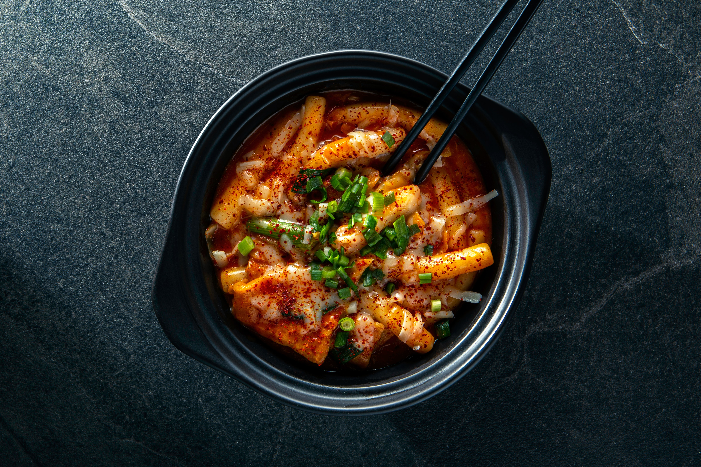

It is made with rice cakes (garaetteok, cylinder-shaped rice cake), fish cakes, boiled egg, and seasoned with chile paste. The rice cakes are chewy and tender. It looks super spicy and, originally, it is! But you can control the amount of chile paste. You might be able to find it easily at food vendors on the street of Korea. There are always delicious dukbokki boiling and ready to go. Garnish with sesame seeds if you like.
Per Serving: 183 calories; protein 4.4g; carbohydrates 41.6g; fat 3.3g; cholesterol 16.4mg; sodium 733.4mg.